Keeping It Classy
Designing a Great Classifier
Kevin Feasel (@feaselkl)https://csmore.info/on/classy
Who Am I? What Am I Doing Here?


Motivation
My goals in this talk:
- Explain what classification is.
- Describe the benefits of classification algorithms.
- Describe common tree- and non-tree-based algorithms.
- Explain what the confusion matrix is.
- Get a feeling for when we might wish to choose a particular classification algorithm.
Agenda
- What Is Classification?
- Tree-Based Algorithms
- The Confusion Matrix
- Non-Tree-Based Algorithms
- Multi-Class Classification
- Choosing a Classifier
A Typical Problem Scenario
Classification is a flavor of supervised machine learning: when we train a model, we have known good answers for our data (a label) as well as our features.
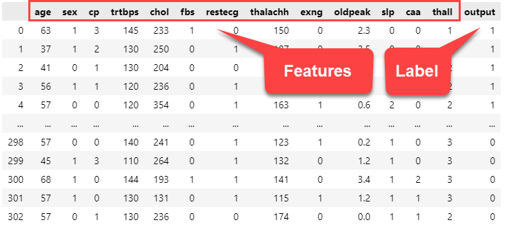Two-Class Classification
The most common type of classification is two-class classification, where our label takes on one of two values.
This can be Yes/No, True/False, In/Out, Win/Loss, 0/1, or whatever.
Multi-Class Classification
Multi-class classification means our label may take on one of multiple values. Common examples of multi-class classification include:
- Choosing blog post categories based on text.
- Selecting the best product category to list on Amazon.
- Predicting if a new product will be Very Unprofitable, Unprofitable, Break-Even, Profitable, Very Profitable.
- Sorting out which house you belong to at Hogwarts.
Gauging Model Quality
The first measure of model quality we will use today is accuracy. We can define accuracy as:
$\dfrac{\sum{(Answers|Correct)}}{\sum{Answers}}$In other words, the sum of correct answers divided by the sum of answers. This ranges from 0-1, where 1 is perfection.
A Quick Note on Deep Learning
Deep learning models have become popular in the machine learning landscape, and there are great things that we can build using neural networks. Because of their level of complexity, however, we will not go into them today.
Agenda
- What Is Classification?
- Tree-Based Algorithms
- The Confusion Matrix
- Non-Tree-Based Algorithms
- Multi-Class Classification
- Choosing a Classifier
Decision Trees
A decision tree is one of the simplest algorithms available to us. Think of it as a series of if-else statements leading to a final decision:
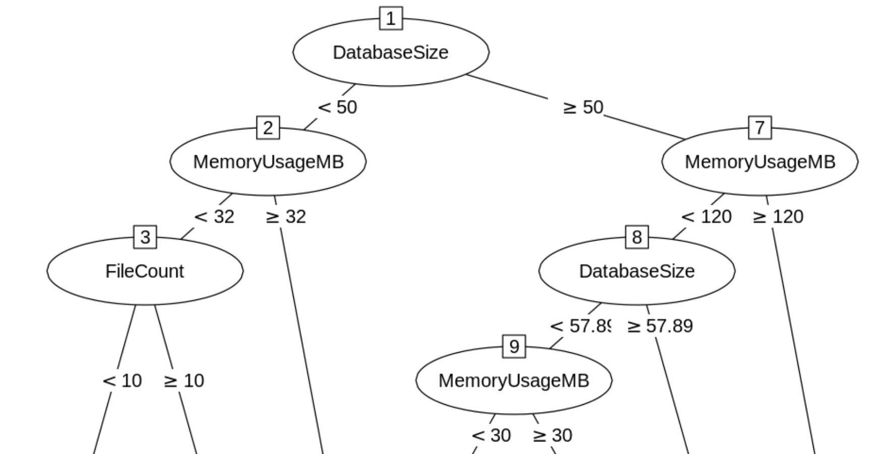CART
Classification and Regression Trees (CART) is a common implementation for decision trees.
The key questions that CART (or any other decision tree implementation) needs to answer are:
- Which variable do we split and at what value?
- How do we decide when a branch shouldn't be split any further?
- What label value should we predict at each terminal node?
Stopping Rules
Stopping rules tell CART when to stop driving down a particular branch. Common stopping rules include:
- Stop when we have a certain minimum number of cases in a node
- Stop when all cases in a node have the same label
- Stop after reaching a certain number of nodes in the branch/tree
The good news is that implementations, such as in the scikit-learn library, automatically have stopping rules built in, so you don't necessarily need to tune them.
Choosing the Predictor
How do we choose which feature to split on in a node? We look at feature importance for the remaining data in the tree:
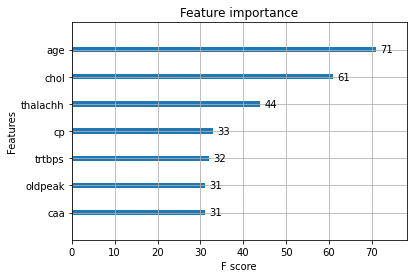In this case, our next split would be on age.
Useful Properties of CART
CART has some additional niceties:
- CART does not rely on the data following a particular distribution.
- Outliers do not affect CART very much.
- CART allows you to use a test data set, as well as use cross-validation.
- You can re-use variables multiple times in the same tree.
Demo Time
Random Forest
The random forest algorithm is an ensemble algorithm, combining together decision trees using a technique called bagging.
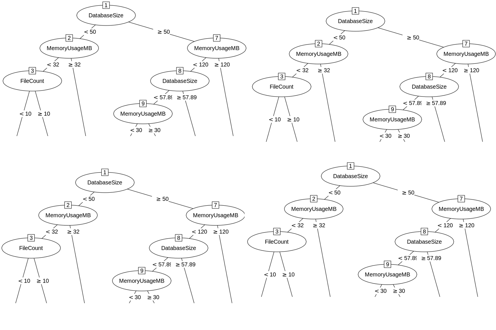Bagging
Bootstrap aggregation (aka bagging) is a technique used to reduce the variance of a statistical learning method. In this case, bagging takes a variety of training sets from the population, builds separate prediction models for each training set, and averages the resulting predictions.
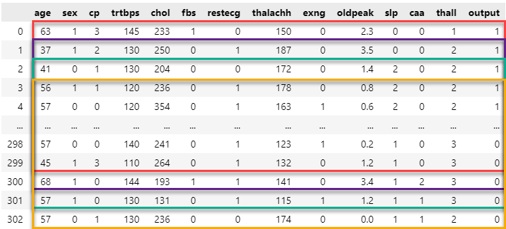Randomness in the Forest
Another important element of the random forest algorithm is the term "random." Whereas CART looks for the optimal feature based on remaining nodes, random forest chooses the optimal model from a randomly-selected subset of features.
Demo Time
XGBoost
The random forest algorithm depends on bagging for its variety and generates independent trees in parallel.
By contrast, Extreme Gradient Boosting (XGBoost) relies on boosting as a technique.
Boosting
Boosting is another ensembling technique like bagging. Unlike bagging, boosting is a sequential technique, meaning that it takes information learned from the prior model and uses it to get better.
AdaBoost
Adaboost is a classic technique for ensemble learning. In each stage of model training, we create a new weak learner to compensate for the shortcomings of existing weak learners.
Specifically, AdaBoost looks at what data the prior model got wrong, weights the incorrect values more highly than correct values, and trains a new model, focusing on getting high-weight, incorrect values right.
Gradient Boosting
Gradient boosting, meanwhile, identifies missed values based on gradients.
Specifically, gradient boosting looks at how far off the prior model was and adds a modification factor intended to make more answers correct than before.
Demo Time
Agenda
- What Is Classification?
- Tree-Based Algorithms
- The Confusion Matrix
- Non-Tree-Based Algorithms
- Multi-Class Classification
- Choosing a Classifier
Accuracy Is Not Enough: Class Imbalance
Suppose we want to detect a rare disease which affects 1 in 10,000 people. Without a treatment of orange juice and toothpaste, these people will disappear in exactly three weeks.
We train a model which is 99.99% accurate at discerning if a person has this disease. Great, right?
The Model
Return: Congratulations! You don't have the disease!
The model does get 9,999 out of 10,000 predictions correct, but it does a terrible job because it misses every single person with the disease!
The Confusion Matrix
The confusion matrix compares reference (i.e., actual) results versus predictions for classification problems.
It gives us information to solve the class imbalance problem.
Accuracy
In normal circumstances, accuracy is a really good baseline indicator for model quality.
Positive Predictive Value
If my model predicts a particular class, what is the probability that this judgment is correct?
Negative Predictive Value
If my model predicts not a particular class, what is the probability that this judgment is correct?
Sensitivity
If an event is positive, how often do we predict positively?
Specificity
If an event is negative, how often do we predict negatively?
Solving the Class Imbalance Problem
When dealing with class imbalance, we look in particular at sensitivity and specificity.
In our health scenario, a specific test would do a great job of rejecting people who do not have the health condition.
A sensitive test would do a great job of detecting people who have the health condition.
Demo Time
Agenda
- What Is Classification?
- Tree-Based Algorithms
- The Confusion Matrix
- Non-Tree-Based Algorithms
- Multi-Class Classification
- Choosing a Classifier
K-Nearest Neighbors (kNN)
K-Nearest Neighbors is a distance-based algorithm for classifying input data.
The short version is, when we get a new data point, we find the k nearest data points (using some distance measure) and choose the most common fit between these.
kNN

Here, the left-most new dot will be green (3G) and the right-most new dot will be orange (2O, 1B).
The Curse of Dimensionality
Distance-based classification algorithms are susceptible to bad results brought about by irrelevant attributes. This is unlike regression, where irrelevant (but independent) features cannot harm the model.
If you have multiple attributes which define a data point, but only a couple of them are relevant, two data points with similar important features might be spatially disparate because they differ so much in irrelevant features.
Solving The Curse of Dimensionality
Examples of techniques:
- Perform feature weighting, where each feature has a weight. Adjust the weights according to classification error and continue until acceptable accuracy is achieved.
- Iteratively remove the feature which most improves performance until you hit a cutoff point. Retain those features you removed and drop the rest.
- Perform gradient descent and train weights using cross-validation.
- Perform dimensionality reduction using a technique like PCA.
Demo Time
Logistic Regression
Three phases of understanding logistic regression:
- It's a regression algorithm--that's in the name!
- It's not a regression algorithm; it's a classification algorithm in regression clothing
- It's a regression algorithm which just happens to work well for classification
Logistic Regression
Logistic regression is built around the Sigmoid function. This has the property of separating fairly cleanly into two outcomes: 0 and 1.
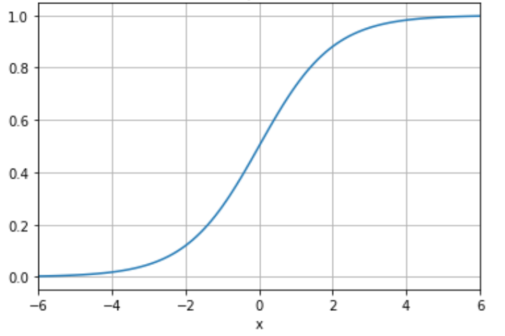Demo Time
Naive Bayes
Naive Bayes is not an algorithm; it is a class of algorithms. Naive Bayes is very easy to understand and reasonably accurate, making it a great class of algorithms to use when starting a classification project.
Naive Bayes Characteristics
Naive Bayes algorithms follow the general form:
- Probabilistic -- calculate probabilities of each output category and choose the best one
- Probabilities derived from Bayes' Theorem
- Features are independent (hence the "naive" approach)
Solving the Problem
Goal: determine, based on input conditions, whether we should golf.
Steps:
- Find the probability of playing golf (prior probability).
- Find the probability of golfing given each variable: Outlook, Temp, Humidity, Wind.
- Plug values from new data into our formula.
Testing a Day
Suppose today = {Sunny, Hot, Normal, False}. Let's compare the P(golf) versus P(no golf):
$P(Y|t) = \dfrac{P(O_s|Y) \cdot P(T_h|Y) \cdot P(H_n|Y) \cdot P(W_f|Y) \cdot P(Y)}{P(t)}$
$P(N|t) = \dfrac{P(O_s|N) \cdot P(T_h|N) \cdot P(H_n|N) \cdot P(W_f|N) \cdot P(N)}{P(t)}$
Note the common denominator: because we're comparing P(Yes|today) versus P(No|today), the common denominator cancels out.
Testing a Day
Putting this in numbers:
The relative likelihood of playing golf:
$P(Yes|today) = \dfrac{2}{9} \cdot \dfrac{2}{9} \cdot \dfrac{6}{9} \cdot \dfrac{6}{9} \cdot \dfrac{9}{14} = 0.0141$The relative likelihood of not playing golf:
$P(No|today) = \dfrac{3}{5} \cdot \dfrac{2}{5} \cdot \dfrac{1}{5} \cdot \dfrac{2}{5} \cdot \dfrac{5}{14} = 0.0068$Time to golf!
Demo Time
Online Passive-Aggressive Algorithms
Online Passive-Aggressive Algorithms are a margin-based set of online trainers.
They follow three critical properties.
Online
Training happens one record at a time.
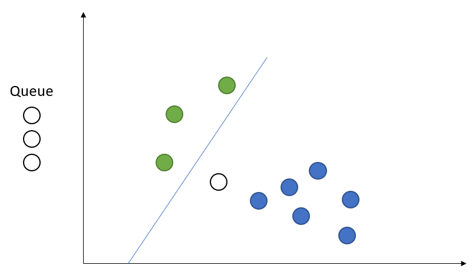Passive
If we predict correctly, don't change the model--just move on to the next prediction.
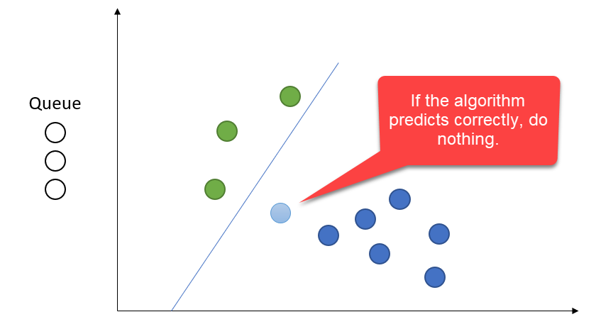Aggressive
If our prediction was incorrect, shift the curve until our latest prediction becomes correct.
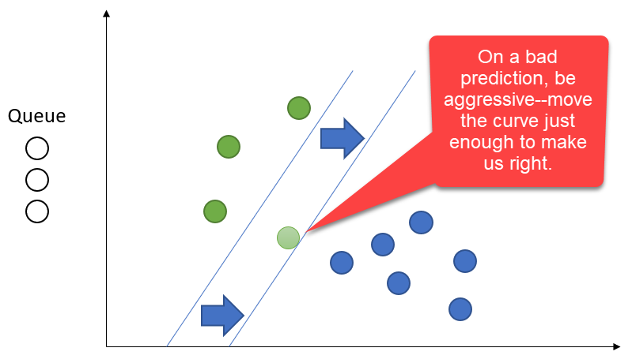More Aggressive
The curve can shift along any relevant axis.
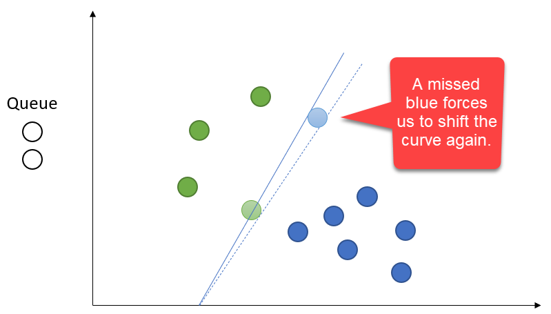Most Aggressive
We only care about two things: the current record and the curve. Prior data points do not matter for the base algorithm, though there are variants which do include a few prior records.
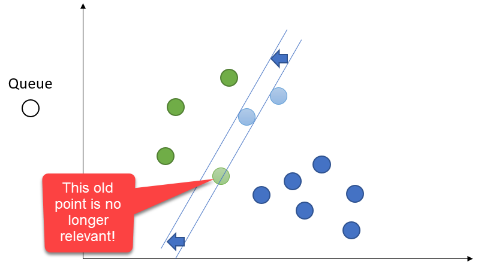Demo Time
Agenda
- What Is Classification?
- Tree-Based Algorithms
- The Confusion Matrix
- Non-Tree-Based Algorithms
- Multi-Class Classification
- Choosing a Classifier
Always Two There Are, No More, No Less
So far, we've focused on two-class classification. This is the most common scenario, and several algorithms--such as Logistic Regression and Passive-Aggressive--depend on this.
Other algorithms, like tree-based algorithms, kNN, and Naive Bayes, can naturally support more than two classes.
Scott Pilgrim vs the World
To get two-class algorithms to work in a multi-class scenario, we can perform "one-versus-all" comparisons.
Instead of calculating P(A), P(B), and P(C) separately, calculate P(A) versus P(Not A). Then, calculate P(B) versus P(Not B) and then P(C) versus P(Not C). Find which of the three has the highest probability and that's your winner.
Demo Time
Agenda
- What Is Classification?
- Tree-Based Algorithms
- The Confusion Matrix
- Non-Tree-Based Algorithms
- Multi-Class Classification
- Choosing a Classifier
General Advice
- Don't get stuck on one algorithm! Try out several for comparison.
- Random forest and XGBoost are generally better than CART.
- XGBoost can be better than random forest, especially as datasets grow larger. Random forest gets slow and memory-intensive with large datasets.
- kNN works best when there are few discontinuities in the data. It works best when your neighbors are relevant.
- Logistic Regression works best with very large datasets and independent features.
General Advice
- Naive Bayes is fast but usually not the most accurate.
- Passive-Aggressive algorithms train extremely quickly and can be very accurate, but are prone to certain types of sequencing failures.
- Passive-Aggressive algorithms scale extremely well to huge datasets because they keep relatively few items in memory and quickly "forget" prior data points. They also work great in embedded devices, where memory is at a premium.
- Accuracy is not the final measure! Make use of the full confusion matrix.
Wrapping Up
Over the course of this talk, we have looked at several classification algorithms and have seen how to use them in the scikit-learn Python package. We've covered two-class and multi-class scenarios and have come up with reasonable guidelines around algorithm choice.
Wrapping Up
To learn more, go here:
https://csmore.info/on/classy
And for help, contact me:
feasel@catallaxyservices.com | @feaselkl
Catallaxy Services consulting:
https://CSmore.info/on/contact